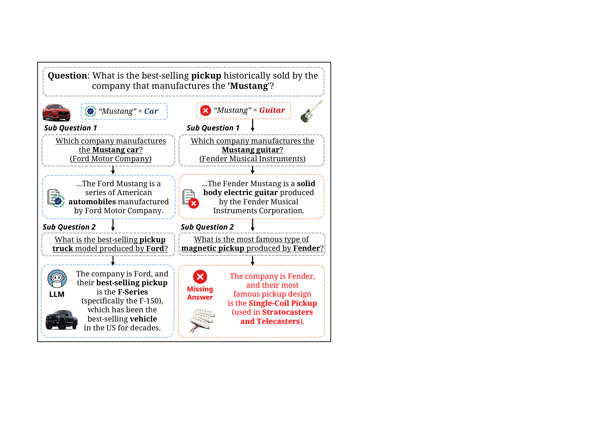
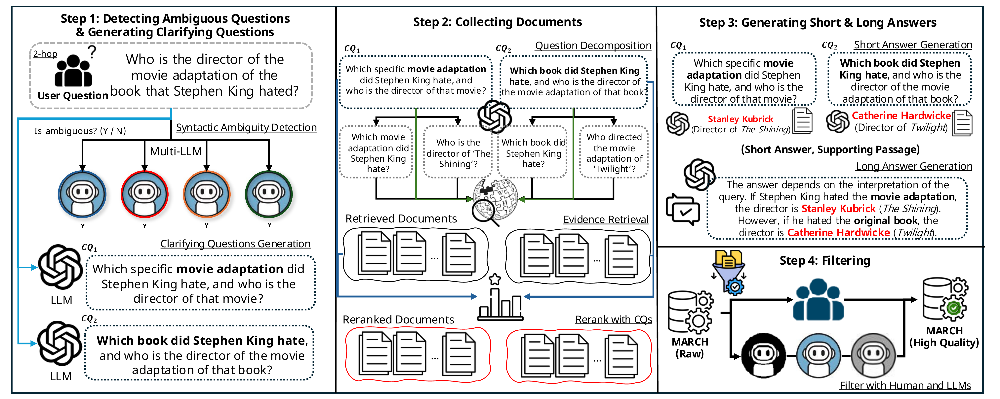
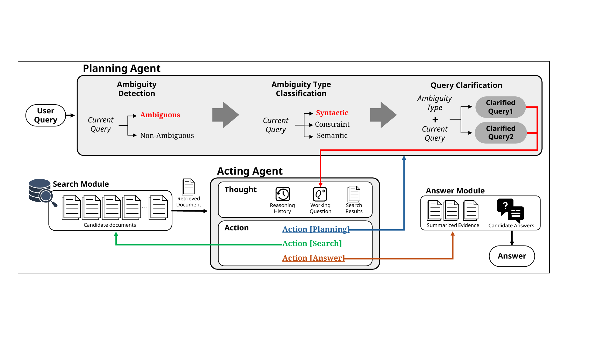
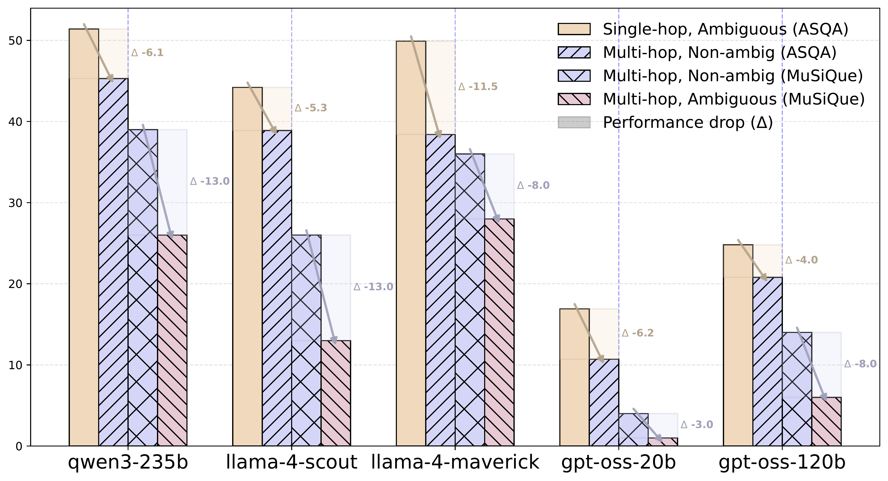

Real-world multi-hop QA is naturally linked with ambiguity, where a single query can trigger multiple reasoning paths that require independent resolution. Since ambiguity can occur at any stage, models must navigate layered uncertainty throughout the entire reasoning chain.
Despite its prevalence in real-world user queries, previous benchmarks have primarily focused on single-hop ambiguity. We introduce MARCH, a benchmark for their intersection, with 2,209 multi-hop ambiguous questions curated via multi-LLM verification and validated by human annotation with strong agreement. To address this challenge, we propose CLARION, a two-stage agentic framework that explicitly decouples ambiguity planning from evidence-driven reasoning.
Multi-hop QA requires constructing logical chains across multiple documents. When ambiguity is introduced, uncertainty scales exponentially—ambiguity can emerge at any step, often remaining latent until prior steps are resolved.

Homonyms or entity-name collisions yielding disjoint evidence trails. The wrong entity invalidates downstream hops.
Multiple valid parses induce different inter-hop dependencies, changing which intermediate evidence is needed.
An over-specific modifier causes a valid chain to be pruned early. Relaxing the constraint recovers the path.
MARCH (Multi-hop Ambiguity Reasoning CHain) contains 2,209 multi-hop ambiguous questions derived from MuSiQue, each paired with clarified questions, per-interpretation answers, evidence passages, and synthesized long answers.

4 LLMs vote with full-agreement rule
Sub-questions retrieved from Wikipedia per interpretation
Per-interpretation short + synthesized long answers
3-LLM verification, unanimous only
CLARION (CLarifying Ambiguity with a Reasoning and InstructiON) decouples ambiguity planning from evidence retrieval.

Setup: Qwen3-235B, Gemini-2.5-Flash, DeepSeek-v3.1 · Qwen3-Embedding-8B retriever · STR-EM, Disambig-F1, LLM-as-a-Judge
| Model | Method | STR-EM↑ | Disambig-F1↑ | Avg↑ | LLM-Judge↑ |
|---|---|---|---|---|---|
| Qwen3-235B | |||||
| No Retrieval | 20.98 | 21.19 | 21.09 | 3.083 | |
| CoT | 21.51 | 22.32 | 21.91 | 2.897 | |
| NaiveRAG | 25.10 | 26.20 | 25.65 | 2.752 | |
| CoT w/ RAG | 25.63 | 26.61 | 26.12 | 2.947 | |
| DIVA | 28.82 | 22.73 | 25.78 | 3.015 | |
| ReAct | 20.98 | 21.00 | 20.99 | 2.832 | |
| CLARION (Ours) | 38.73 | 28.38 | 33.56 | 3.474 | |
| Gemini-2.5-Flash | |||||
| No Retrieval | 15.59 | 20.10 | 17.85 | 2.307 | |
| NaiveRAG | 22.16 | 28.63 | 25.40 | 2.297 | |
| CoT w/ RAG | 23.15 | 27.31 | 25.23 | 2.373 | |
| DIVA | 18.82 | 20.29 | 19.56 | 2.303 | |
| ReAct | 21.32 | 22.37 | 21.84 | 2.428 | |
| CLARION (Ours) | 29.12 | 26.30 | 27.71 | 2.752 | |
| DeepSeek-v3.1 | |||||
| No Retrieval | 17.75 | 18.72 | 18.24 | 2.683 | |
| NaiveRAG | 20.20 | 25.03 | 22.62 | 2.084 | |
| CoT w/ RAG | 21.33 | 23.18 | 22.25 | 2.632 | |
| DIVA | 18.82 | 20.66 | 19.74 | 2.636 | |
| ReAct | 23.17 | 24.78 | 23.97 | 2.723 | |
| CLARION (Ours) | 31.47 | 27.03 | 29.25 | 3.042 | |
| Human Performance | 73.00 | 62.00 | 67.50 | — | |

@inproceedings{park2026march,
title = {{MARCH}: Evaluating the Intersection of Ambiguity
Interpretation and Multi-hop Inference},
author = {Park, Jeonghyun and Baek, Ingeol and Yoon, Seunghyun
and Jang, Haeun and Garimella, Aparna and Jain, Akriti
and Lipka, Nedim and Lee, Hwanhee},
booktitle = {Findings of the Association for Computational
Linguistics: ACL 2026},
year = {2026}
}